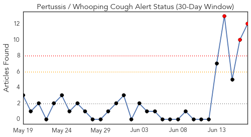
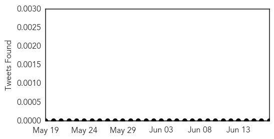
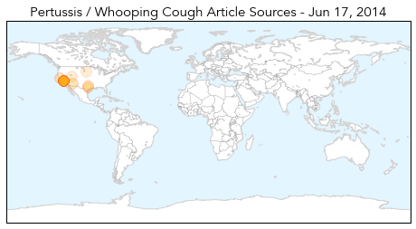
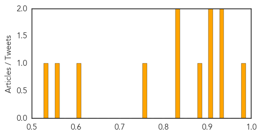

Toggle navigation
Early Warning
Daily Alerts
Pertussis / Whooping Cough
Jun 17, 2014
Compare to:
-
Dengue Fever
Hemmorhagic Fever
Mold/Fungal Infection
Influenza
Meningitis
Middle East Respiratory Syndrome
Cholera
Hepatitis
Chikungunya
Yellow Fever
Bubonic Plague
West Nile Virus
Swine Flu
Ebola
Measles
Unknown
Mumps
30 Day Trends
Web: 3
alerts
, 0
warnings
Twitter: 0
alerts
, 0
warnings
Top Articles:
0.981
Whooping Cough Epidemic Strikes California: 800 Cases In Past Two Weeks
0.927
Whooping cough reaches epidemic levels in California
0.926
California's deadly whooping cough epidemic blamed on anti-vaccine campaign — RT USA
0.923
California hit by whooping cough epidemic
0.907
California Facing Whooping Cough Epidemic: High Infection Risk for Children
0.875
California currently experiencing Whooping cough epidemic
0.849
Arizona whooping-cough cases down; California faces epidemic
0.845
Queen of the Valley restricts visits due to whooping cough
0.759
California Facing a Whooping Cough Epidemic
0.614
Pertussis Cases on Track to Reach Record Numbers in Tarrant County
0.573
Whooping Cough Declared Epidemic In California, Utah Still Ok
0.541
Black Hills Pioneer: Local News
Top Tweets:
No tweets found for Jun 17, 2014
Web/News Articles

Tweets

Article Locations

Article Confidences
